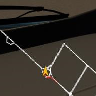
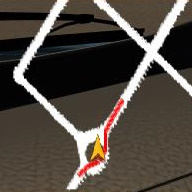
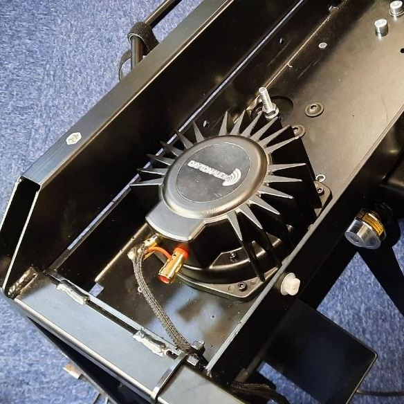
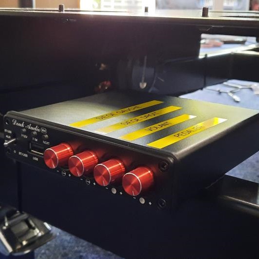
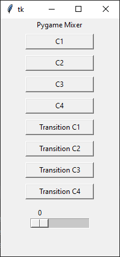

Ma première expérience en entreprise
Je tiens dans un premier temps à remercier Mr. Develter de m'avoir donné l'opportunité de travailler dans son entreprise pour la fin de mon DUT.

Simulateur de conduite.
Je tiens dans un premier temps à remercier Mr. Develter de m'avoir donné l'opportunité de travailler dans son entreprise pour la fin de mon DUT.

Ma première mission au sein de l'entreprise a été de retoucher le GPS du simulateur. Le but était de rendre les lignes représentant les routes plus larges pour faciliter la lecture.

Une première tâche plutôt simple qui m'a donné le temps d'appréhender l'environnement de développement ainsi que le langage Squirrel* utilisé dans le projet.

L'une de mes missions les plus intéressantes a été le système de vibrations à intégrer au matériel.
Pour cette mission, j'ai eu l'occasion de travailler en partenariat avec l'équipe technique responsable du matériel.

Le choix du matériel s'est porté sur 4 bass-shakers, une carte son 7.1 ainsi qu'un amplificateur à 4 canaux.
À partir de ceci, il a fallu faire des vibrations les plus réalistes possible en passant par du code.

J'ai dans un premier temps créé une petite interface de test me permettant d'envoyer des sons dans chacun des bass-shakers ce qui m'a servi par la suite à tester plusieurs sons jusqu'à avoir le plus adapté.
Vient ensuite l'intégration au programme de base. À l'aide de transfert de données via des sockets, les informations voulues sont envoyées à un deamon en python qui contrôle les vibrations en temps réel en fonction des instructions reçues.